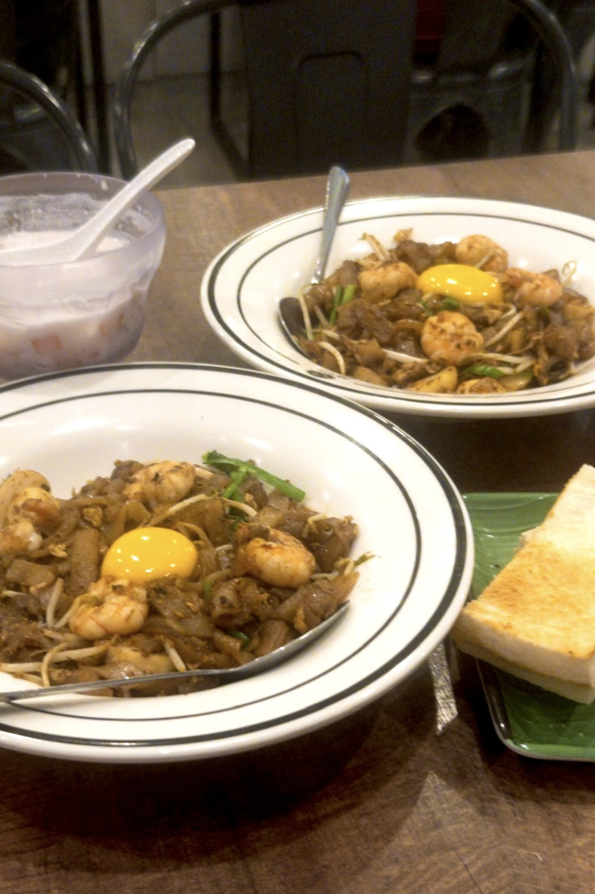

水蜜桃罐頭
2025/六月號
偷茶賊

她喊著太飽了，用湯匙把粄條翻過來又翻過去，像在重新炒一盤菜。我順手摸走了她那半杯拉茶，沒有問過要不要繼續喝，也沒有經過她的同意，裝作體恤她的食量。
顯然，她不打算配合我的戲碼，看著我笑了一下：「就知道妳想喝。」像調侃，又像早料到我會這麼做。
我吃得快，她瞥了眼我空空如也的盤子，忍不住感嘆起歲月如梭：「想當年，我們第一次見面時我 17 歲、你 15 歲，那天晚餐吃薩莉亞，我超努力在配合你當時的吃飯速度，最後還是比你早吃完。」
我笑說我早已來到了她那年的 17 歲。她沈默片刻，又像活了半百那樣看著我感嘆：「對欸，妳已經 17 歲了。」
我懶得理會她的時光荏苒，只是嘲笑她早已不復當年。本以為她會嘻嘻哈哈地反駁，畢竟她總以大胃王自稱，但兩年的歲月似乎把她訓服了，只說了句帶點惋惜的「對啊。」像昨日少年今白頭。
我決定不打斷她的歲月之歌，看著她繼續把粄條翻過來又翻過去，好像真的能把它們重新炒熱似的。那杯拉茶最後還是被我喝完了，她沒問我味道如何，我也沒說。
冰塊早已融化成水，拉茶的味道變得有些淡。但我沒有告訴她，就像她沒有問我那樣。
2025/6/16